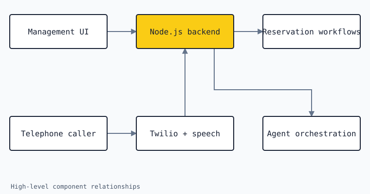

Cadeira
Connecting a telephone conversation to a restaurant reservation.
- My work
- Client and backend development
- Project focus
- AI telephony · Reservations
The problem
A telephone conversation and a reservation system work very differently. One is spoken and conversational; the other needs structured information about bookings and availability. Cadeira brings these two parts together in an AI restaurant reservation application.
My contribution
I work across the React and TypeScript client and the Node.js backend. The client provides an interface for the application’s settings and reservation data. The backend connects the agent, telephony, speech services, and reservation workflows.
The application interface
The web client is built with React, Vite, and TypeScript. It sits alongside reservation, table-availability, and calendar-integration functionality.
The voice connection
Twilio connects live telephone calls to the application. Microsoft speech services provide speech-to-text and text-to-speech, and LangChain and LangGraph support agent orchestration.
The supporting services
Socket.io supports real-time client–server communication. The project also uses Redis for semantic caching and Docker for service deployment.
- React
- TypeScript
- Node.js
- Twilio
- LangGraph
- Socket.io
- Redis
- Docker
How the pieces connect
The diagram separates the management interface from the telephone path. Both connect to the backend, but the voice path also depends on telephony and speech services.

Design notes
Conversation and application state
An agent response and a reservation record serve different purposes. Explaining the system requires following both the conversation path and the structured application workflow, rather than treating a successful spoken response as evidence that a booking has been completed.
Several services in one live interaction
A call crosses telephony, speech, and agent services. Each boundary contributes to the experience the caller receives. The diagram makes those dependencies visible; it does not imply a measured latency or reliability guarantee.
Real-time updates alongside regular application data
The application combines real-time communication through Socket.io with the settings and reservation data managed by the client and backend. These are complementary parts of the product, with different update patterns.
Where the project stands
The project spans the client, backend, voice connection, and reservation-related integrations. The architecture shown here is a high-level explanation of those parts, not a claim that every possible booking scenario is handled.
Scope and limitations
This case study does not report call-success rates, latency measurements, or customer outcomes. Those would need evidence from a defined evaluation before being presented as results.